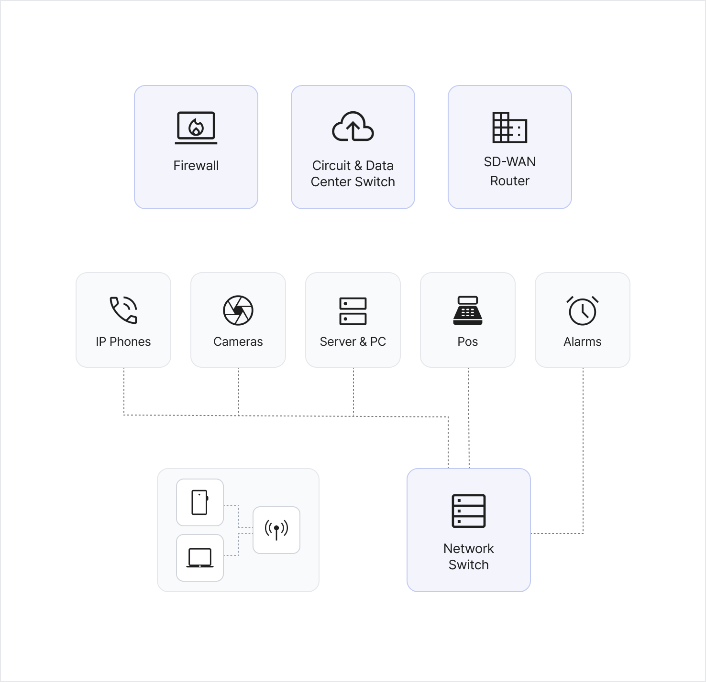

IT 인프라 서비스
클라우드, AI, 가상화 기반 차세대 IT 인프라 서비스를 제공하며 회사의 디지털 혁신을 선도합니다.
자체 플랫폼인 NCSPACE, NCKUBE, NCACE 등을 통해 셀프서비스형 인프라, MSA 개발 환경, AI 학습·훈련, VDI 서비스 등을 End-to-End로 제공합니다.
마이크로 서비스 아키텍처, 컨테이너 오케스트레이션, 가상 데스크톱(VDI), 보안, 자동화, 모니터링 체계를 통합하여 개발자들이 혁신적인 서비스를 안정적으로
구축할 수 있도록 지원하여 단순 IT 지원을 넘어 창의적 협업과 지속 가능한 혁신을 가능하게 하는 파트너 역할을 수행합니다.
네트워크 인프라 서비스
국내외 계열사 임직원의 업무용 유/무선 네트워크 인프라 구축과 운영을 담당합니다.
사용자 유/무선 네트워크 인프라 운영 및 무선 네트워크 품질 관리
업무공간 내 네트워크 인프라 구축, 사옥 간 회선 운영 및 사업장 연동
스위치 및 백본 장비 운영, 사용자 단말 연결 케이블 공사 및 관리
사내 인터넷 통신을 위한 방화벽과 회선 운영, 인터넷 회선 계약 관리, 공인 IP 및 NAT 설정, 접근 제어 관리
자회사 및 해외지사와 3rd Party 협업을 위한 전용선 및 보안 터널 운영
네트워크 인프라 구축 및 운영, VIP 서비스 제공을 위한 L7 장비 운영
클라우드 & SaaS 서비스
임직원들이 기업 가치 창출에 기여할 수 있도록 IT 서비스를 효율적으로 운영·개발하며 최고의 IT 혁신 환경을 제공합니다.